library(tidyverse)
library(tidylog)
library(palmerpenguins)
theme_set(hrbrthemes::theme_ipsum())- 1
- Set the theme for the plots.
Trends are another most common type of plot. They are used to show how a variable changes over time (or any other variable of interest).
We load the same packages as before.
library(tidyverse)
library(tidylog)
library(palmerpenguins)
theme_set(hrbrthemes::theme_ipsum())Let’s start with a simple example using the economics dataset from the tidyverse. To simplify the example, we’ll filter the data to include only observations after the year 2000 and further restrict it to January data.
economics |>
filter(year(date) > 2000) |>
filter(month(date) == 1) |>
ggplot(aes(x = date, y = unemploy)) +
geom_point(color = "white", fill = "#0072B2", shape = 21, size = 2)filter: removed 402 rows (70%), 172 rows remaining
filter: removed 157 rows (91%), 15 rows remaining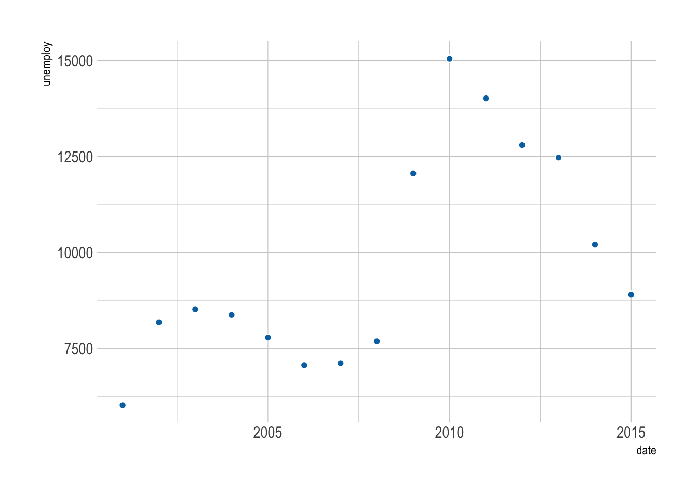
The figure above is not very informative. It is difficult to see the trend. Below are some tweaks that can help.
Connect the dots with a line to reveal the trend. This is easy to do with geom_line().
economics |>
filter(year(date) > 2000) |>
filter(month(date) == 1) |>
ggplot(aes(x = date, y = unemploy)) +
geom_line(linewidth = 1, color = "#0072B2") +
geom_point(color = "white", fill = "#0072B2", shape = 21, size = 4)filter: removed 402 rows (70%), 172 rows remaining
filter: removed 157 rows (91%), 15 rows remaining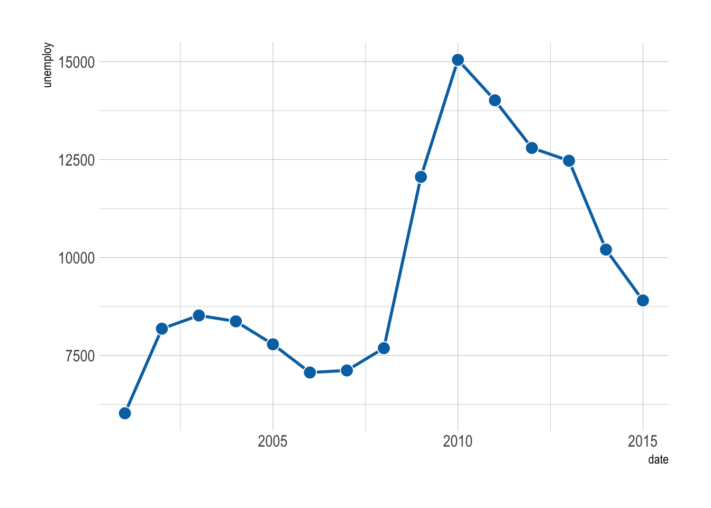
A useful tip is to color the border of the points white, so they stand out better against the line.
Sometimes a smooth curve is easier on the eyes. We can use the geom geom_xspline() from the ggalt package to create a spline to connect all the points.
economics |>
filter(year(date) > 2000) |>
filter(month(date) == 1) |>
ggplot(aes(x = date, y = unemploy)) +
ggalt::geom_xspline(color = "#0072B2") +
geom_point(color = "white", fill = "#0072B2", shape = 21, size = 4)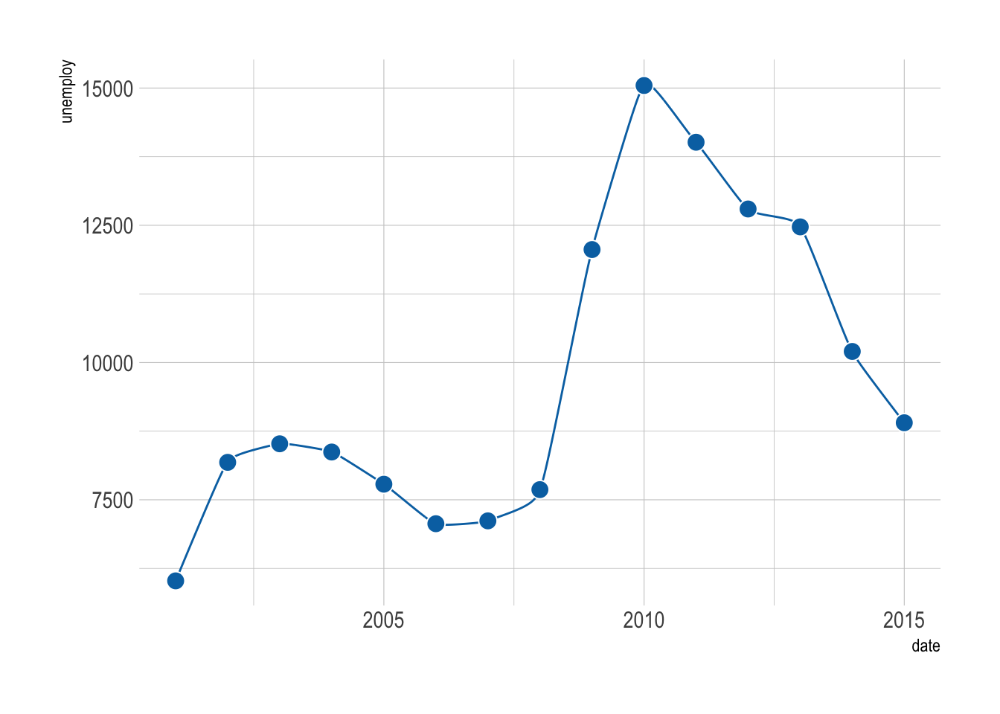
An area plot is a great way to show the trend of a variable over time. It is a line plot with a shaded area under the line. We can use geom_area() to create an area plot.
economics |>
filter(year(date) > 2000) |>
filter(month(date) == 1) |>
ggplot(aes(x = date, y = unemploy)) +
geom_line(linewidth = 1, color = "#0072B2") +
geom_point(color = "white", fill = "#0072B2", shape = 21, size = 4) +
geom_area(fill = "#0072B2", alpha = 0.2)filter: removed 402 rows (70%), 172 rows remaining
filter: removed 157 rows (91%), 15 rows remaining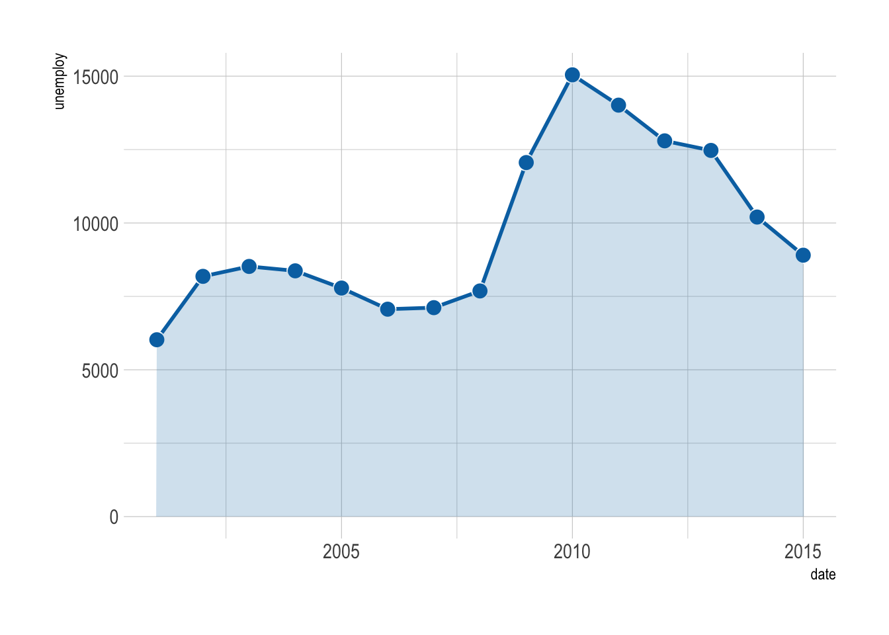
When there are many data points, plotting each one might make your graph look like a plate of spaghetti—delicious, but messy!
economics |>
filter(year(date) > 2000) |>
ggplot(aes(x = date, y = unemploy)) +
geom_line(color = "#0072B2") +
geom_point(color = "white", fill = "#0072B2", shape = 21, size = 3)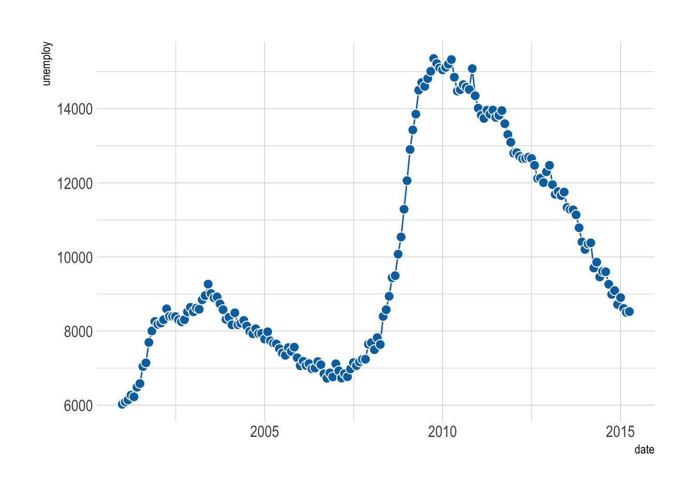
In these cases, smoothing the data can help you see the overall trend more clearly. Below are some alternatives to consider.
A moving average smooths out short-term fluctuations, giving you a clearer view of the long-term trend. It’s like averaging your favorite TV show ratings over several episodes rather than judging based on one controversial finale.
We can use the zoo package to calculate the moving average.
economics |>
filter(year(date) > 2000) |>
mutate(unemploy_avg_year = zoo::rollmean(unemploy, k = 12, fill = NA)) |>
mutate(unemploy_avg_2years = zoo::rollmean(unemploy, k = 24, fill = NA)) |>
ggplot(aes(x = date, y = unemploy)) +
geom_line(aes(color = 'line')) +
geom_line(aes(y = unemploy_avg_year, color = 'year'), size = 1) +
geom_line(aes(y = unemploy_avg_2years, color = '2 years'), size = 1) +
scale_color_manual(
values = c(`line` = "grey60", `year` = "#d55e00", `2 years` = "#009E73"),
breaks = c("year", "2 years", "line"),
labels = c("Yearly average", "2-year average", "Line"),
name = NULL
) +
theme(legend.position = 'top')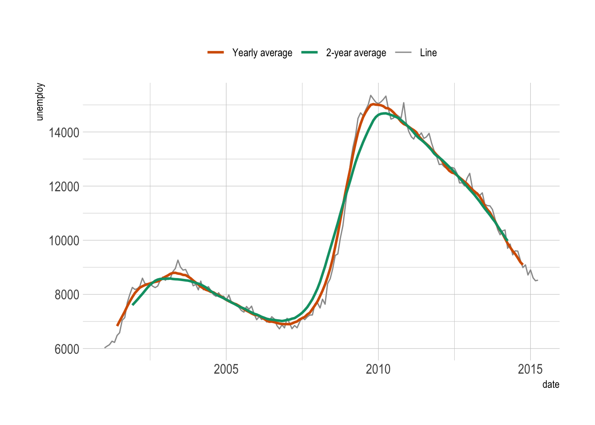
Alternatively, you can add a regression smoother to highlight the trend. We have already used the linear regression smoother with geom_smooth(method = "lm) in Chapter 6. It is easy to use other nonlinear methods.
economics |>
filter(year(date) > 2000) |>
ggplot(aes(x = date, y = unemploy)) +
geom_point(color = "white", fill = "grey60", shape = 21, size = 3) +
geom_smooth(method = "gam", formula = y ~ s(x, k = 20, bs = 'cr'))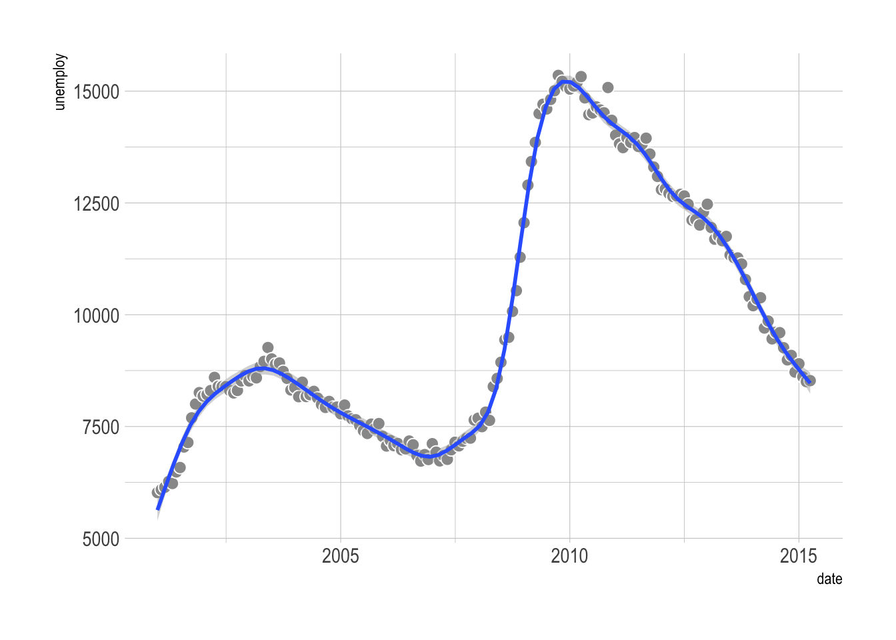
It is important to note that the smooth line depends heavily on the method used! When possible, it is a good idea to specify the method (like what we did above).
Additionally, when handling many data points, consider preprocessing or smoothing your data with packages like tidymodels—it can be much faster than forcing ggplot2 to do all the heavy lifting.
So far, we’ve looked at trends for a single variable. But what if you want to visualize trends for multiple groups? For that, we’ll use the blockbusters dataset from the ggstream package.
First, let’s load the data and quickly plot it.
# install.packages("ggstream")
data("blockbusters", package = "ggstream")
blockbusters |>
ggplot(aes(x = year, y = box_office, color = genre)) +
geom_line()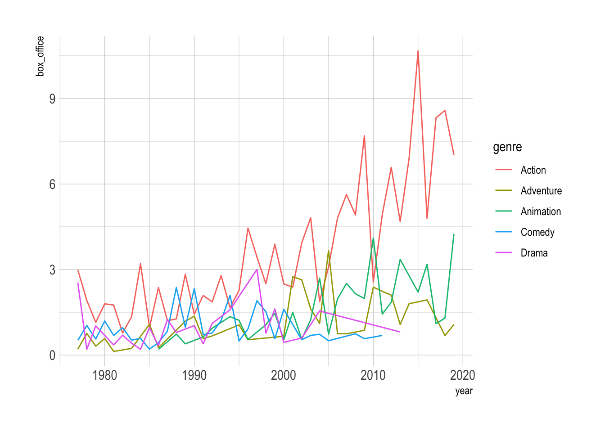
This figure is not informative, as we have too many lines. This is known as the (infamous) spaghetti graph. Below we will show some alternatives that are much more informative.
We can also use facets to show the trend of each group.
blockbusters |>
ggplot(aes(x = year, y = box_office, color = genre)) +
geom_line(linewidth = .5) +
facet_wrap(~genre) +
MetBrewer::scale_color_met_d("Cross") +
theme(legend.position = 'none')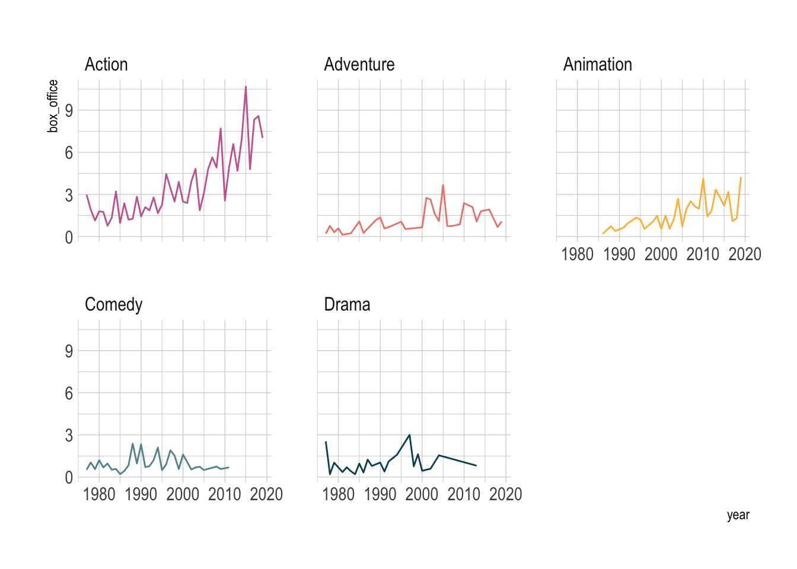
However, this ignored the comparison between the groups. We can use gghighlight to make the comparison more explicit.
library(gghighlight)
blockbusters |>
ggplot(aes(x = year, y = box_office, color = genre)) +
geom_line(linewidth = .5) +
gghighlight(use_direct_label = FALSE,
unhighlighted_params = list(colour = alpha("grey85", 1))) +
facet_wrap(~genre) +
MetBrewer::scale_color_met_d("Cross") +
theme(legend.position = 'none')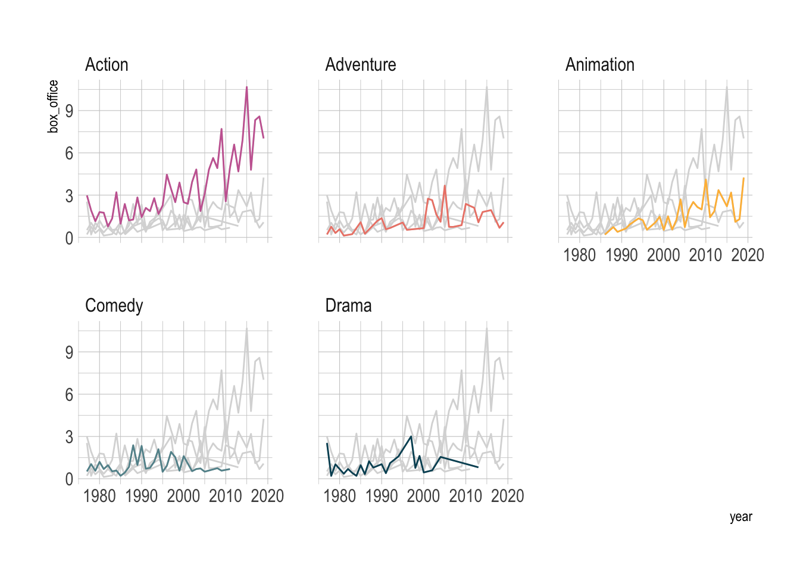
A stacked area plot shows the contribution of each genre over time. Think of it as a layered cake.
blockbusters |>
ggplot(aes(x = year, y = box_office, fill = genre)) +
geom_area() +
MetBrewer::scale_fill_met_d("Cross")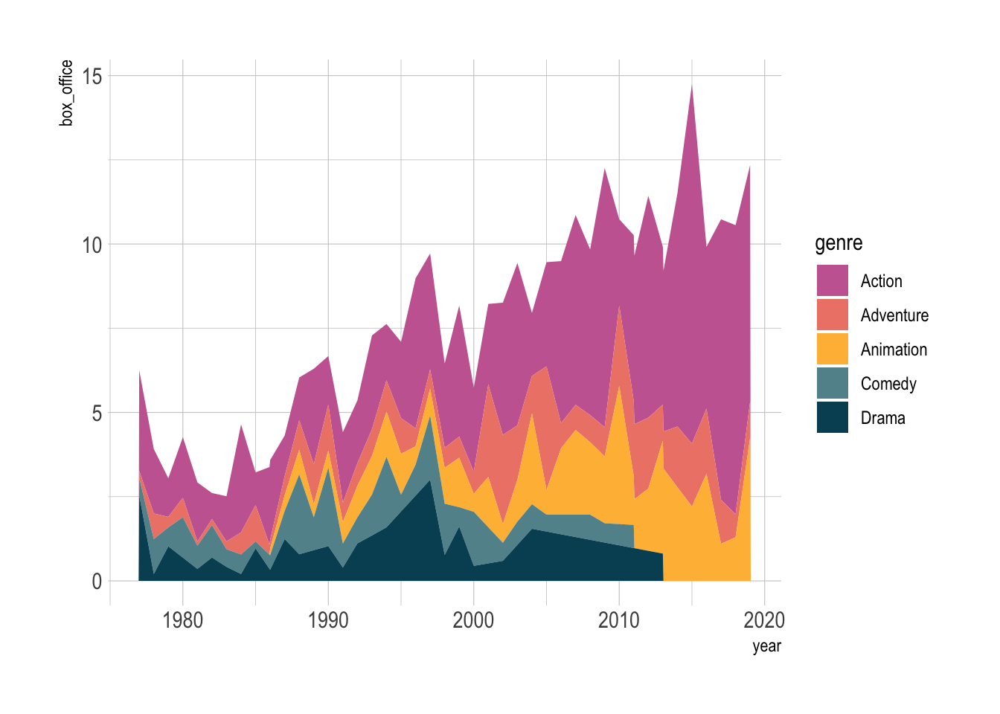
However, a downside of stacked area is that it does not treat the groups equally. We can see the lowest group clearly, but the others are harder to see.
One special case when stacked area works well is when we only have two groups.
blockbusters |>
filter(genre %in% c("Comedy", "Drama")) |>
pivot_wider(names_from = genre, values_from = box_office) |>
drop_na() |>
ggplot(aes(x = year)) +
geom_line(aes(y = Comedy, color = "Comedy"), linewidth = 1) +
geom_line(aes(y = Drama, color = "Drama"), linewidth = 1) +
ggh4x::stat_difference(aes(ymin = Comedy, ymax = Drama), alpha = 0.3) +
scale_fill_manual(labels = c("More Comedy", "More Drama"),
values = c("#3D85F7", "#C32E5A")) filter: removed 103 rows (66%), 54 rows remaining
pivot_wider: reorganized (genre, box_office) into (Comedy, Drama) [was 54x3, now 32x3]
drop_na: removed 10 rows (31%), 22 rows remaining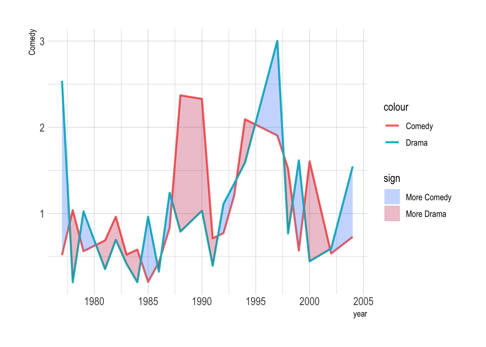
Streamgraphs are a visually appealing alternative that gives your plot a flowing, organic look. We can use the ggstream package to create them easily.
blockbusters |>
ggplot(aes(x = year, y = box_office, fill = genre)) +
ggstream::geom_stream(color = 'white') +
MetBrewer::scale_fill_met_d("Cross")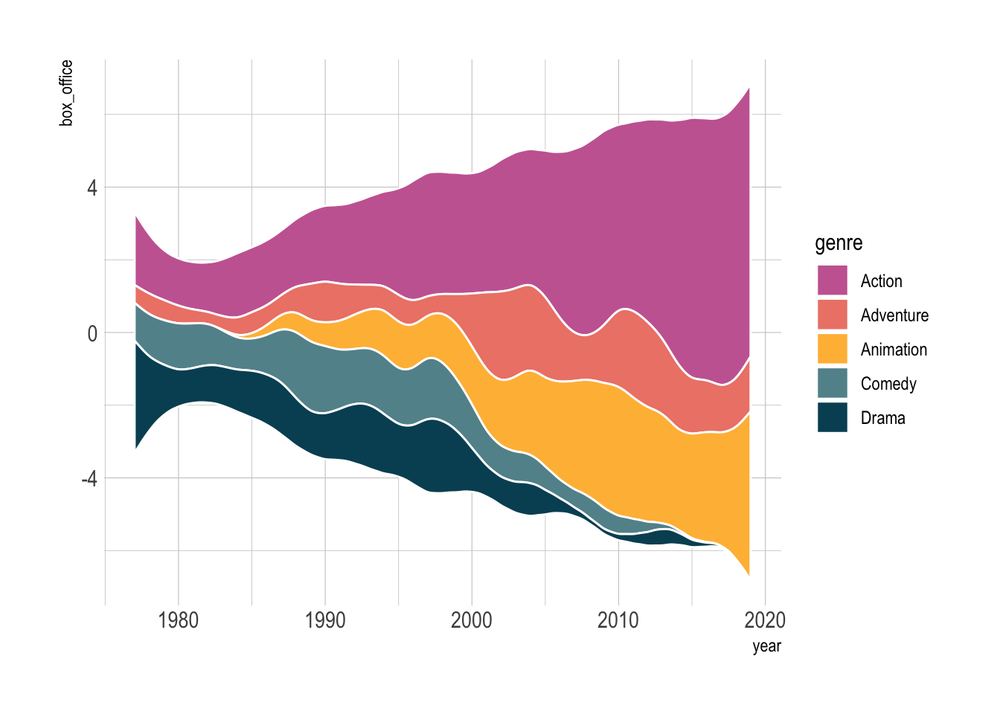
Bump charts are more resticted in usage, but when used well, they are stunning. They are ideal for highlighting rankings (not amounts) over time, and when you have just a few groups.
blockbusters |>
filter(year %in% c(2000, 2002, 2004)) |>
group_by(year) |>
mutate(rank = rank(box_office)) |>
ggplot(aes(x = year, y = rank, color = genre)) +
ggbump::geom_bump(size = 2, smooth = 6) +
geom_point(color = "white", size = 4) +
geom_point(size = 2) +
ggrepel::geom_label_repel(data = . %>% filter(year == 2004), aes(label = genre),
size = 4, nudge_x = 0.3) +
MetBrewer::scale_color_met_d("Cross") +
scale_x_continuous(breaks = c(2000, 2002, 2004)) +
theme_minimal() +
theme(legend.position = 'none',
panel.grid = element_blank()
) filter: removed 142 rows (90%), 15 rows remaining
group_by: one grouping variable (year)
mutate (grouped): new variable 'rank' (double) with 5 unique values and 0% NA
filter (grouped): removed 10 rows (67%), 5 rows remaining (removed 2 groups, one group remaining)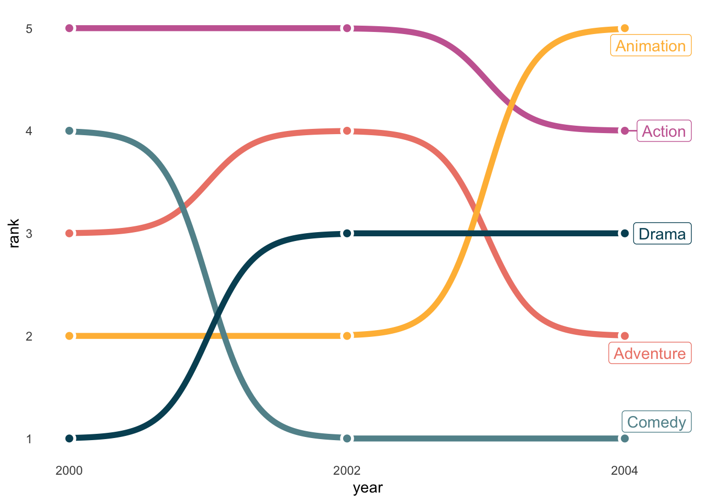
Some people like to use 3D plots to show trends. I admit that it is fancy, but it is generally not informative.
library(plotly)
blockbusters |>
plot_ly(x = ~year,
y = ~genre,
z = ~box_office,
type = 'scatter3d',
mode = 'lines',
color = ~genre)